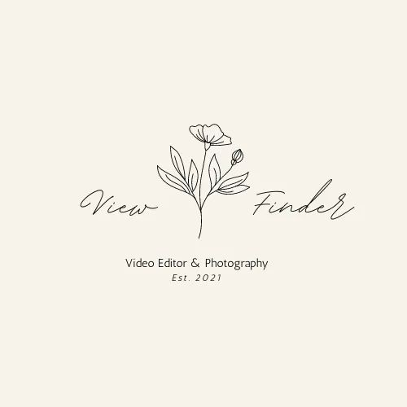

Overview
Purpose
I enjoy capturing unique moments in time that allow others to feel the wonders of their surroundings.
Audience
Every photo tells a story, and at ViewFinder Photography, I’m here to help you tell yours. Whether you're a busy parent looking to capture family moments, an adventurer wanting to preserve your favorite experiences, or someone seeking a fresh portrait, I offer photography sessions that cater to all kinds of needs and personalities. From relaxed, laid-back shoots to high-energy, creative sessions, there’s something for everyone. Whatever your vision, I’ll work with you to create photos that not only reflect who you are but also leave you with memories to cherish for years to come.
Branding
Website Logo
Style Guide
Color Palette
| Primary | Secondary | Accent 1 | Accent 2 |
|---|---|---|---|
Typography
Heading Font: Arial, Helvetica, San-serif;
Paragraph Font: San-serif, Arial, Helvetica;
Normal paragraph example
Capture the beauty of the world with ViewFinder Photography, offering stunning photo shoots in a variety of settings. As a passionate, owner-operated business, I specialize in landscapes, portraits, and adventure photography. Whether you're looking to immortalize special moments or explore breathtaking scenery, ViewFinder delivers timeless images that tell your unique story.
Colored paragraph example
Sessions range from relaxed and perfect for families, to more dynamic shoots for those seeking a creative, high-energy experience. No matter what type of photography experience you're looking for, ViewFinder Photography can bring your vision to life.
Navigation
Site Map
Content
Home page
Welcome to ViewFinder Photography, where every moment is an opportunity to capture the extraordinary. As an owner-operated studio, I specialize in creating stunning, personalized photo experiences that celebrate life’s most memorable moments. From breathtaking landscapes to intimate portraits and adventurous shoots, my goal is to tell your unique story through timeless, beautifully composed images. Whether you're looking to immortalize a special event or explore the beauty of the world around you, ViewFinder Photography delivers photographs that are as lasting as the memories they capture.
Images for the Home page
Gallery
Explore a curated collection of stunning imagery captured through the lens of ViewFinder Photography. From sweeping landscapes to intimate portraits and thrilling adventure shots, each photo tells a story of beauty, emotion, and the world around us. Our gallery showcases the diverse range of work we offer, reflecting our passion for capturing the perfect moment in every setting. Whether it’s the serenity of nature or the energy of an action-packed shoot, we invite you to experience the timeless memories that can only be captured through the eye of a passionate photographer.
Images for the Gallery
About
Meet Eliza, the heart and soul behind ViewFinder Photography. The youngest of nine siblings, Eliza was raised in a tight-knit family in a small coastal town in Oregon, where she developed her keen eye for photography from a young age. Growing up surrounded by breathtaking natural beauty, she quickly became captivated by the way light, color, and perspective could transform the ordinary into the extraordinary. Her passion for capturing the world around her evolved into a lifelong pursuit, one that has led her to create timeless images that tell unique stories. Now based in Idaho, Eliza continues to share her love for photography with clients near and far. Whether it’s a scenic landscape, a candid portrait, or an adventurous shoot, she believes every moment deserves to be captured in its most authentic and beautiful form. While Eliza’s heart is rooted in the Pacific Northwest, she’s always ready to travel to bring your vision to life—no location is too far for her camera lens.
Images for the About page
Wireframes
Create three wireframes for your site. One for each page and list them here
Home
Boxed around the text wont be there. It will just be the words.
Gallery
Equally spaced, same sized photos for the whole gallery.
About
Boxes around the text wount be there. It will just be the words.